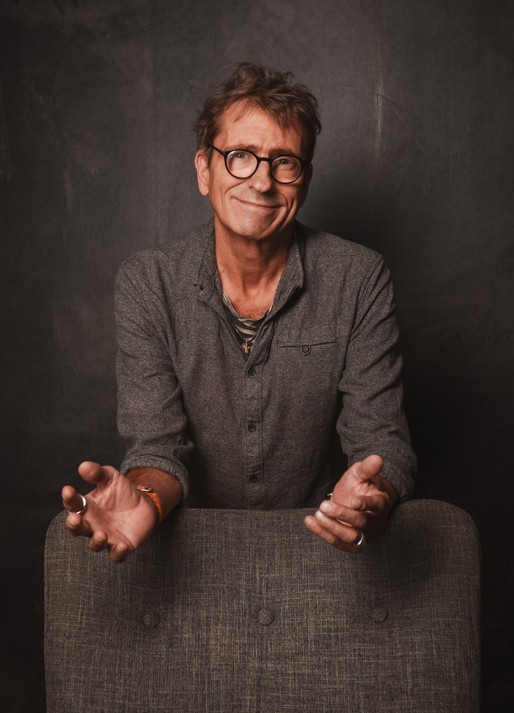

Klarheits-Session
60–90 Minuten – konzentriert, sortierend, ausrichtend.
- Besorgt sortieren: was ist wirklich Thema?
- Entscheiden: nächster klarer Schritt
- Konkreter Handlungsplan bis „nächster Termin“


„Was, du lebst noch?
Klar! Ich habe gerade erst angefangen.“
Ich begleite Menschen, die nicht länger funktionieren, sondern leben wollen. Als Life Trust Coach stehe ich für eine klare Haltung:
Warum ich? Weil ich den Abgrund kenne … und das alles aus integraler Sicht (wir beleuchten alle Facetten und Perspektiven).

Sinnwärts
Vom klaren Gespräch bis zu vertiefenden Programmen – in deinem Tempo, integer und wirksam.
Hier findest du die verschiedenen Möglichkeiten, wie wir zusammenarbeiten können.
60–90 Minuten – konzentriert, sortierend, ausrichtend.
Struktur, Reflexion, Übungen. Integrales Wachstum in deinem Tempo.
Hinweis: Ich arbeite als Coach, nicht therapeutisch. Ich teile Erfahrung und Wissen (u. a. Neurobiologie, Suchtmechanismen), ohne Heilversprechen und ohne heilkundliche Leistungen.
nach Veit Lindau – mit Lehr-Lizenz
Intensivformate zu Spezialthemen
Ausrichtung + Umsetzung
Denken · Fühlen · Handeln · Sein verbinden
Balancierte Praxis statt Quick Fix
Verlässliche Navigation im Alltag
Menschlichkeit vor Methode. Ich arbeite klar, integer und wertebasiert (K.O.M.: Klarheit · Orientierung · Menschlichkeit). Das Integrale gibt Richtung: Wir verbinden Verstehen und Verkörpern, Verstand und Gefühl, Praxis und Wirkung.
Kein Heilsversprechen. Kein Therapieersatz. Coaching auf Augenhöhe.
Neulich habe ich mein inneres Kind getroffen.
Es saß weinend auf dem Boden und sagte:
„Du liest zu viel über Spiral Dynamics – und zu wenig Märchen.“
Ich antwortete:
„Wenn du aufhörst zu weinen, erzähle ich dir eine integrale Heldenreise.“
Das innere Kind will nicht optimiert werden.
Es will gesehen werden.
👉 Klarheit. Orientierung. Menschlichkeit.
Das sind die drei sichtbaren Pole meines Kompasses.
Doch unter der Oberfläche wirkt ein vierter: das Integrale.
Ich arbeite mit einem inneren System,
das Denken, Fühlen, Handeln und Sein verbindet –
und begleite Menschen, die sich nicht länger auf Symptome reduzieren lassen,
sondern bereit sind, sich selbst in der Tiefe zu erkennen.
K.O.M. steht auf meinem Logo.
Doch es lebt in meiner Haltung.
62 Jahre alt.
20 Jahre Alkohol – 15 Jahre trocken.
Ich habe vieles verloren – und das Wesentliche gefunden.
Heute arbeite ich als professioneller Life Trust Coach.
Ich begleite Menschen, die aus der Sackgasse wollen.
Menschen, die nicht mehr nur funktionieren, sondern leben wollen.
Ich bin kein Therapeut.
Aber ich kenne den Abgrund.
Ich weiß, was es heißt, nicht mehr weiterzuwissen –
und dennoch aufzustehen.
Meine Geschichte ist kein Makel.
Sie ist meine Stärke.
Ich habe gelernt, wie man in Krisen wächst,
sich neu ausrichtet und das innere Steuer übernimmt.
Du willst ein neues Drehbuch für dein Leben schreiben.
Ich helfe dir, deine Themen zu erforschen, zu verstehen und zu erlösen.
DAS LEBEN IST SCHÖN! Lass es uns entdecken.
„Mehr innere Ruhe und klare Schritte.“
— Führungskraft, 42
„Respektvoll, ehrlich, wirksam.“
— Ärztin, 38
„Erklärt neurobiologisch, begleitet menschlich.“
— Musiker, 55